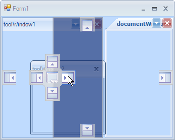

DockingGuidesTemplate
RadDock comes with two predefined docking guides templates:
Visual Studio 2008 
Visual Studio 2010

By default, RadDock uses the VS2010 template. In order to use the VS2008 template, you can set it as shown below:
__[C#] __
this.radDock1.DockingGuidesTemplate = PredefinedDockingGuidesTemplate.VS2008;
__[VB.NET] __
Me.RadDock1.DockingGuidesTemplate = PredefinedDockingGuidesTemplate.VS2008
Creating a custom docking guides template
RadDock gives you the ability to create and use your own __DockingGuidesTemplates.__The following example explains what is contained in a DockingGuidesTemplate and how it should be set up.
For our custom DockingGuidesTemplate we will use the following images (used in VS2008 template):
| Left | Top | Right | Bottom | Fill |
| Left Hot | Top Hot | Right Hot | Bottom Hot | Fill Hot |
| Center Background |
We should first create a DockingGuidesTemplate object and then set the images and their locations on the Center Background image. RadDock will define its hot mouse areas on the CenterBackground image depending on the images' locations that we set. The left, top, right and bottom images are reused for the outer guides (outside the center "compass"):
__[C#] __
DockingGuidesTemplate template;
void Form1_Load(object sender, EventArgs e)
{
template = new DockingGuidesTemplate();
template.DockingHintBackColor = Color.FromArgb(30, Color.Green);
template.DockingHintBorderColor = Color.FromArgb(30, Color.DarkGreen);
template.LeftImage.Image = Properties.Resources.Left;
template.TopImage.Image = Properties.Resources.Top;
template.RightImage.Image = Properties.Resources.Right;
template.BottomImage.Image = Properties.Resources.Bottom;
template.FillImage.Image = Properties.Resources.Fill;
template.LeftImage.HotImage = Properties.Resources.LeftHot;
template.TopImage.HotImage = Properties.Resources.TopHot;
template.RightImage.HotImage = Properties.Resources.RightHot;
template.BottomImage.HotImage = Properties.Resources.BottomHot;
template.FillImage.HotImage = Properties.Resources.FillHot;
template.CenterBackgroundImage.Image = Properties.Resources.Center;
template.LeftImage.LocationOnCenterGuide = new Point(0, 28);
template.TopImage.LocationOnCenterGuide = new Point(28, 0);
template.RightImage.LocationOnCenterGuide = new Point(65, 28);
template.BottomImage.LocationOnCenterGuide = new Point(28, 65);
template.FillImage.LocationOnCenterGuide = new Point(28, 28);
this.radDock1.DockingGuidesTemplate = template;
}
__[VB.NET] __
Private template As DockingGuidesTemplate
Private Sub Form1_Load(sender As Object, e As EventArgs)
template = New DockingGuidesTemplate()
template.DockingHintBackColor = Color.FromArgb(30, Color.Green)
template.DockingHintBorderColor = Color.FromArgb(30, Color.DarkGreen)
template.LeftImage.Image = Resources.Left
template.TopImage.Image = Resources.Top
template.RightImage.Image = Resources.Right
template.BottomImage.Image = Resources.Bottom
template.FillImage.Image = Resources.Fill
template.LeftImage.HotImage = Resources.LeftHot
template.TopImage.HotImage = Resources.TopHot
template.RightImage.HotImage = Resources.RightHot
template.BottomImage.HotImage = Resources.BottomHot
template.FillImage.HotImage = Resources.FillHot
template.CenterBackgroundImage.Image = Resources.Center
template.LeftImage.LocationOnCenterGuide = New Point(0, 28)
template.TopImage.LocationOnCenterGuide = New Point(28, 0)
template.RightImage.LocationOnCenterGuide = New Point(65, 28)
template.BottomImage.LocationOnCenterGuide = New Point(28, 65)
template.FillImage.LocationOnCenterGuide = New Point(28, 28)
Me.RadDock1.DockingGuidesTemplate = template
End Sub
As you can see in the code snippet, we are setting the DockingHintBackColor and DockingHintBorderColor properties which determine the colors of the docking hint area:
The result is shown on the figure below